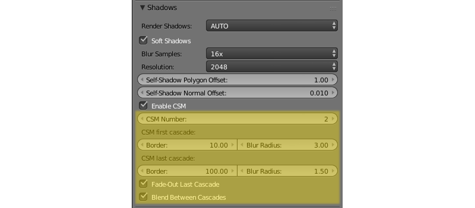

Освещение, тени и фон¶
Table of Contents
Типы затенения¶
Результат расчета освещения (затенения) зависит от направления векторов нормалей. Поддерживаются стандартные типы затенения, использующиеся в Blender, Shading: Flat (используются нормали граней) и Shading: Smooth (используются интерполированные нормали вершин), а также их комбинации.
{kind=link}
Если желаемый результат недостижим стандартными средствами, можно воспользоваться редактором нормалей.
Результат применения различных типов затенения и использования редактора нормалей:

- Flat Shading
- Smooth Shading
- Smooth Shading + фаска
- Smooth Shading + фаска + редактирование нормалей
Освещение от источников света¶
На сцене может быть несколько (но не менее одного) источников света разного типа.
Типы источников света¶
Поддерживаются источники света следующих типов:
- Point
- Точечный. Свет распространяется из одной точки равномерно во все стороны, с постепенным затуханием.
- Sun
- «Солнце». Свет распространяется из бесконечной плоскости прямолинейно в одном направлении, без затухания.
- Spot
- Прожектор. Свет распространяется из одной точки, с ограничением угла распространения, с постепенным затуханием.
- Hemi
- Полусфера. Свет распространяется из бесконечной полусферы, без затухания.
Настройка источников света¶
Производится во вкладке Object Data при выборе объекта-лампы.
{kind=link}
- Цвет
- Цветовая характеристика света. Значение по умолчанию (1.0, 1.0, 1.0) (белый).
- Energy
- Интенсивность излучения. Значение по умолчанию 1.0.
- Falloff
- Тип затухания. Значение экспортируется, но в движке всегда используется
Inverse Square(обратный квадратичный). Применяется для источников света типаPointиSpot. Значение по умолчаниюInverse Square. - Distance
- Параметр затухания. Применяется для источников света типа
PointиSpot. Значение по умолчанию 30.0. - Specular
- Создание отблеска на объектах. По умолчанию включено.
- Diffuse
- Применение рассеянного освещения к объектам. По умолчанию включено.
- Spot Shape > Size
- Угол конуса в градусах. Применяется для источников света типа
Spot. Значение по умолчанию 45º. - Spot Shape > Blend
- Параметр смягчения края светового пятна. Применяется для источников света типа
Spot. Значение по умолчанию 0.15. - Dynamic Intensity
- Источник света используется для расчета изменения времени суток. Применяется для источников света типа «Солнце». По умолчанию отключено.
- Shadow > Shadow
- Источник света используется для расчета падающих теней. Применяется в случае наличия нескольких источников света. По умолчанию отключено.
- Shadow > Clip Start
- Расстояние между источником света и ближней плоскостью отсечения. Используется при генерации теней. Значение по умолчанию - 1.001.
- Shadow > Clip End
- Расстояние между источником света и дальней плоскостью отсечения. Используется при генерации теней Значение по умолчанию - 30.002.
Освещение от окружающей среды¶
Движок поддерживает 3 метода симуляции рассеянного освещения от окружающих объектов.
- «Плоское» освещение белым цветом.
- Полусферическая модель освещения, в которой задается цвет горизонта и цвет зенита, в результате чего объекты заливаются градиентом между этими цветами в зависимости от направления нормалей.
- Освещение с помощью карты окружения - т.н. методика image-based lighting.
Обратите внимание, что освещение от окружающей среды рассчитывается по упрощённой модели, в которой объекты не затеняют друг друга.
{kind=link}
Настройка¶
- World > Environment Lighting > Energy
- Интенсивность освещения от окружающей среды. Значение по умолчанию 1.0.
- World > Environment Lighting > Environment Color
- Выбор метода симуляции рассеянного освещения:
White- «плоское» освещение белым цветом,Sky Color- полусферическая модель ,Sky Texture- освещение с помощью карты окружения. Значение по умолчаниюWhite. - World > Horizon Color и World > Zenith Color
- Если выбрана полусферическая модель рассеянного освещения
Sky Color, цвет горизонта и цвет зенита задаются цветоподборщикамиWorld > Horizon Color(цвет горизонта) иWorld > Zenith Color(цвет зенита). При выборе цвета рекомендуется активировать опциюWorld > Blend Sky. - World > Use Nodes (Cycles)
- Если эта опция включена, ноды
Cyclesмогут использоваться для настройки окружающей среды. По умолчанию отключено. - World > Reflect World
- Если эта опция включена, окружающая среда будет отображаться при рендеринге отражений (т.е., будет отражаться в зеркальных поверхностях). По умолчанию отключено.
- World > Render Only Reflection
- Если эта опция включена, окружающая среда будет визуализироваться для отражений, но не для самой сцены. По умолчанию отключено.
Использование карты окружения¶
Для того, чтобы использовать карту окружения в целях реализации освещения от окружающей среды, необходимо:
- Включить опцию
Environment Lightingво вкладкеWorld. - Выбрать метод
Environment Lighting > Sky Texture. - Перейти из вкладки
Worldво вкладкуTexture. - Создать карту окружения, загрузить в нее соответствующее изображение.
- Для карты окружения на панели
Export Optionsдля значенияSky Texture UsageвыбратьENVIRONMENT_LIGHTINGилиBOTH(опцияBOTHактивирует также использование этой текстуры в качестве текстуры неба).
{kind=link}
Тени¶
Тени - один из важнейших элементов при рендеринге конечного изображения. Они предоставляют зрителю не только информацию о силуэте объектов, но и об их высоте и взаимном расположении, положении источника света и т.д.
Платформой Blend4Web реализуются такие техники, как каскадные карты теней (CSM) и смягченные тени (PCF).
Генерировать тени могут не более четырёх (или трёх, если включен SSAO) источников света одновременно. Если источников света больше (и у всех включён параметр Shadow), будут видны тени только от четырёх из них.

Активация¶
- На объектах, отбрасывающих тени, включить опцию
Shadows: Castво вкладкеObject. - На объектах, получающих тени, включить опцию
Shadows: Receiveво вкладкеObject. - Убедиться, что включена опция
ShadowsAUTOилиONво вкладкеRender.
{kind=link}
Настройка¶
- Направление
- В случае наличия нескольких источников света рекомендуется указать, какой именно источник света будет использоваться для расчета падающих теней, включив опцию
Shadow > Shadowво вкладкеObject Dataпри выборе объекта-лампы. - Цвет
- Цвет тени определяется настройками освещения от окружающей среды.
Во вкладке Render на панели Shadows находятся дополнительные настройки:

- Render Shadows
- Включает и выключает рендеринг теней. Возможные значения:
ON,OFFиAUTO. Значение по умолчанию -AUTO. - Soft Shadows
- Включает размытие карт теней. По умолчанию включено.
- Resolution
- Разрешение используемой карты теней. Значение по умолчанию: 2048 x 2048px.
- Blur Samples
- Количество сэмплов, используемых для размытия карты теней. Возможные значения - 4x, 8x и 16x (значение по умолчанию).
- Self-Shadow Polygon Offset
- Коэффициент смещения полигона в зависимости от ориентации к источнику света. Значение по умолчанию: 1.
- Self-Shadow Normal Offset
- Коэффициент смещения полигона по нормали. Значение по умолчанию: 0.010.
Последние две настройки служат для борьбы с артефактами самозатенения. Они проявляются на объектах, одновременно отбрасывающих и принимающих тени. Параметр Self-Shadow Polygon Offset лучше справляется с артефактами во внутренних областях полигонов, а Self-Shadow Normal Offset - в приграничных. Оба параметра приводят к искажению теней, поэтому рекомендуется держать их как можно меньшими.
{kind=link}
Примечание
Тени для точечных (Point) источников света генерируются так же, как и для направленных (Spot), и падают только в одном направлении, определяемом параметром Rotation.
- Enable CSM
- Включение каскадной модели теней; открывает доступ к расширенным настройкам. Отключено по умолчанию. Не работает, если опция
Shadowвключена более чем для одного источника света. Для источников света типаPointиSpotподдерживается только один каскад теней.
Эта опция позволяет выбрать один из следующих вариантов наложения теней:
- Стандартная модель, использующая одну оптимизированную карту теней, охватывающую всю сцену (
Enable CSMотключена). - Каскады теней (
Enable CSMвключена).
- Blur Radius
- Коэффициент размытия теней, позволяющий настроить cмягченные тени. Значение по умолчанию: 3. Коэффициент 0 даст жесткие тени.
{kind=link}
Смягченные тени могут повысить качество и реалистичность изображения. Они скрывают неизбежную при использовании основанных на изображениях техник зубчатость краев, особенно сильно проявляющуюся для карт теней низкого разрешения. Использование смягченных теней часто позволяет снизить разрешение без существенной потери качества.
Стандартная модель¶
Этот вариант больше подходит для маленьких сцен, состоящих из небольшого числа объектов. Благодаря оптимизации на таких сценах можно добиться более высокого качества теней по сравнению с каскадной моделью. Данный вариант проще и быстрее настроить, а использование всего лишь одной карты теней положительно сказывается на производительности.
Каскады теней¶
Примечание
Данные настройки поддерживаются только для источников освещения типа Sun. Для других источников каскады автоматически отключаются.
Для обеспечения приемлемого качества теней и одновременно покрытия значительных пространств необходимо использовать несколько стадий генерации теней (каскадов). При этом вблизи наблюдателя располагается каскад с наилучшим качеством, вдали от наблюдателя — с наихудшим. Этот вариант больше подходит для сцен среднего и большого размера, например, игровых уровней.
При включении предоставляет расширенные настройки:
- CSM Number
- Количество каскадов теней. Поддерживается от 1 до 4 каскадов. Значение по умолчанию: 1.
- CSM First Cascade Border
- Размер первого каскада. Значение по умолчанию: 10.0.
- CSM Last Cascade Border
- Размер последнего каскада. Значение по умолчанию: 100.0.
Размеры промежуточных каскадов интерполируются на основе последних двух параметров.
Примечание
При настройке следует помнить, что, увеличивая размер каскада, мы получаем на нем менее качественные тени. С другой стороны, уменьшение параметра CSM First Cascade Border приблизит к камере и сделает более заметными последующие менее детальные каскады. Уменьшение параметра CSM Last Cascade Border приведет к исчезновению теней на более близком расстоянии от камеры. Однако, при использовании мягких теней качество в целом улучшится благодаря размытию на границах.
{kind=link}
- CSM First Cascade Blur Radius
- Коэффициент размытия на первом каскаде. Значение по умолчанию: 3. Коэффициент 0 даст жесткие тени.
- CSM Last Cascade Blur Radius
- Коэффициент размытия на последнем каскаде. Значение по умолчанию: 1.5. Коэффициент 0 даст жесткие тени.
Радиус размытия каждого промежуточного каскада интерполируется на основе этих параметров.
Примечание
Смягченные тени рекомендуется настраивать сначала на первом каскаде опцией CSM First Cascade Blur Radius, а далее на всех остальных с помощью CSM Last Cascade Blur Radius. Часто на последнем каскаде может потребоваться размытие меньшее, нежели на первом. Это нужно для того, чтобы тени на последнем каскаде не стали слишком блеклыми из-за низкой детализации, к тому же это уменьшит нежелательные артефакты самозатенения.
- Fade-out Last Cascade
- Плавное исчезновение последнего каскада. По умолчанию включено.
- Blend Between Cascades
- Сглаживание границ между каскадами. По умолчанию включено.
{kind=link}
Цвет фона¶
Цвет фона можно задать несколькими способами:
- Установить параметры
Horizon ColorиZenith Colorна вкладкеWorldв Blender, предварительно выставив опциюWorld > Render Sky. - Поместить сцену внутрь модели (например, куба или сферы) с направленными внутрь нормалями, с материалом и опциональной текстурой.
- Разместить перед камерой поверхность с материалом и опциональной текстурой, присоединить ее к камере связью родитель-потомок. При необходимости настроить расстояние до поверхности, переднюю и заднюю плоскости отсечения камеры.
{kind=link}
Использовать текстуру неба.
Настроить динамически генерируемую атмосферу.
Установить параметр движка
background_color, используя программный методconfig.set(), предварительно отключив опциюWorld > Render Skyна вкладкеWorldв Blender. Установленное значение используется в качестве аргумента метода WebGLclearColor(). Для получения корректных результатов рекомендуется отключить прозрачность контекста WebGL (параметрalpha). Такая конфигурация используется по умолчанию в стандартном веб-плеере движка.var m_cfg = b4w.require("config"); var m_main = b4w.require("main"); // gray m_cfg.set("background_color", new Float32Array([0.224, 0.224, 0.224, 1.0])); m_cfg.set("alpha", false); m_main.init(...);
В качестве фона можно использовать любой HTML контент, находящийся позади элемента
canvas, который используется для рендеринга. Для это необходимо активировать прозрачность контекста WebGL (параметрalpha), предварительно отключив опциюWorld > Render Skyна вкладкеWorldв Blender. Для получения корректных результатов рекомендуется выставить полностью прозрачный черный цвет фона. Такая конфигурация используется по умолчанию в стандартном просмотрщике сцен SDK движка.var m_cfg = b4w.require("config"); var m_main = b4w.require("main"); m_cfg.set("background_color", new Float32Array([0.0, 0.0, 0.0, 0.0])); m_cfg.set("alpha", true); m_main.init(...);
См.также